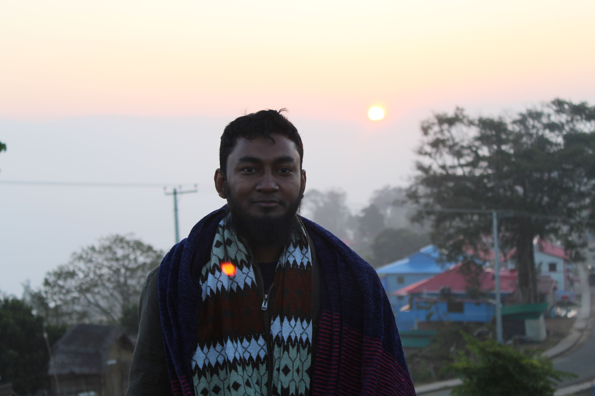
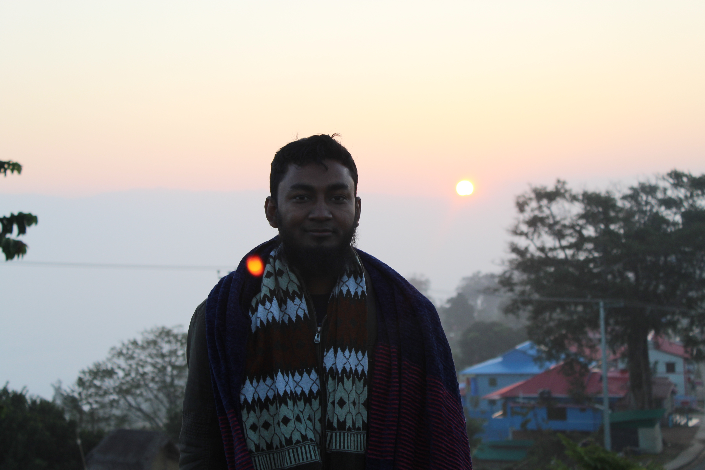

Sajek Valley (Bengali: সাজেক উপত্যকা) is an emerging tourist spot in Bangladesh situated among the hills of the Kasalong range of mountains in Sajek union, Baghaichhari Upazila in Rangamati District.[3] The valley is 1,476 feet (450 m) above sea level.[4] Sajek valley is known as the Queen of Hills & Roof of Rangamati.
Read More